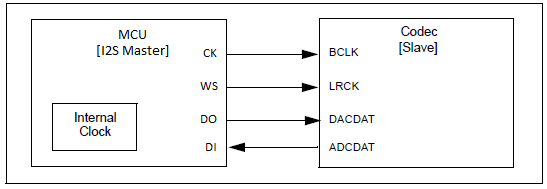
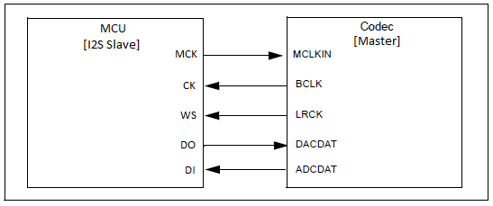

|
MPLAB Harmony Audio Help
|
The I2S module implements an I2S (Inter-IC Sound) interface, for connection between an MCU and an audio peripheral such as a codec or Bluetooth module.
The I2S module provides support to the audio protocol functionality via four standard I/O pins. The four pins that make up the audio protocol interface modes are:
In addition, there is a fifth line, called REFCLKO (Reference CLock Output, or Master Clock), which can be used to drive the codec.
The SCK provides the clock required to drive the data out or into the module, while FS provides the synchronization of the frame based on the protocol mode selected. In I2S mode, the leading edge of audio data is driven out one SCK period of starting the frame.
In Master mode, the module generates both the SCK and FS.
In Slave mode, the peripheral generates the BCLK and LRCLK signals, driving the SCK and FS pins of the I2S module.
Master Mode
Master Generating its Own Clock – Output BCLK and LRCK

Slave Mode
Codec Device as Master Derives MCLK from MCU Reference Clock Out

|
MPLAB Harmony Audio Help
|